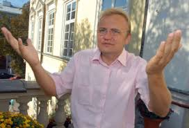

вибувший кандидат у Президенти України Андрій Садовий

Андрі́й Іва́нович Садови́й (нар. 19 серпня 1968, Львів, Українська РСР) —
український політик, громадський діяч та бізнесмен. Засновник громадської організації
«Самопоміч», голова політичної партії «Об'єднання „Самопоміч“», співзасновник ТРК «Люкс»
. Міський голова Львова з 25 квітня 2006 року.